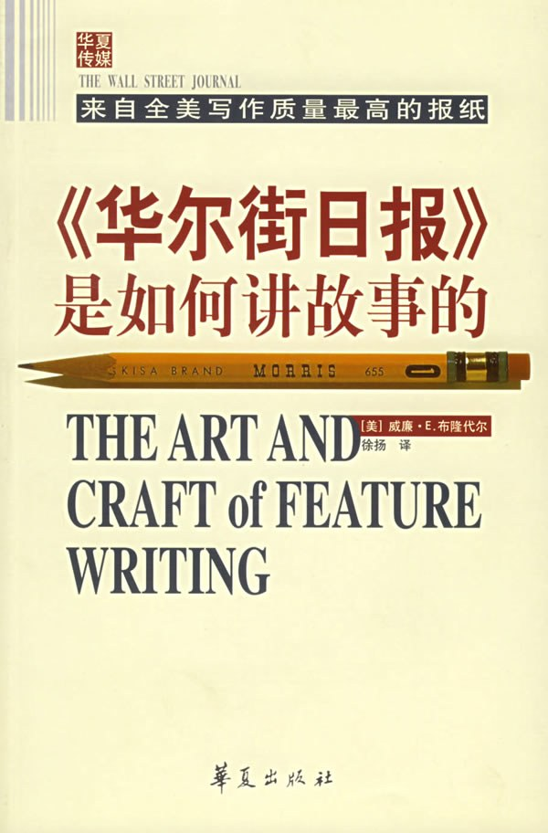

《〈华尔街日报〉是如何讲故事的》

总体观点
《华尔街日报》资深头版非虚构写作导师威廉·布隆代尔，在本书中全面解密了享誉全球的“华尔街日报体”特稿写作技艺。
核心法则：再宏大、枯燥、抽象的商业与社会议题，都必须通过“显微镜+望远镜”的镜头语言呈现——以具体的微观人物切入，拉升到宏观行业视野，再落脚回人物命运。
全书提炼出好故事的构思逻辑、动感六要素、主线把控法则与润色修改秘诀，是将枯燥事实转化为具有小说般吸引力的非虚构殿堂级教科书。
核心观点
-
1. 宏大抽象的议题必须找一个具体微小的切口落地
读者对抽象的统计数字麻木不仁，但会对一个具体人物的挣扎心生共情；小切口才能照亮大时代。
报道美国钢铁业整体衰落的宏观危机，不堆砌全国产量折线图，而是从匹兹堡一位失业老炉工在厨房里喝闷酒的手指特写开篇。 -
2. 故事必须充满冲突、悬念与变化才能牢牢锁住读者眼球
平铺直叙的流水账是阅读毒药；好特稿必须建立“现状—意外事件—艰难应对—深层反思”的戏剧性叙事张力。
报道一家跨国药企的新药研发，从科学家在培养皿里偶然发现异常菌斑切入，层层展现实验失败、资金断裂与临门一脚的生死反转。 -
3. “华尔街日报体”的核心骨架是微观与宏观的无缝切换
经典的特稿结构是：具象人物导语（钩子）引出全局核心段（胡桃夹子），展开多角度论证，最后呼应开头人物。
先写一个得州果农遭遇罕见寒潮，紧接着跳出全州农业受灾十亿美元的数据和保险体系危机，最后回到老果农对春天的期盼。 -
4. 采访不是机械提问，而是像侦探一样多方求证与挖掘细节
优秀的非虚构作者必须走到新闻现场，观察环境陈设、面部微表情，并寻找对立立场的知情人互相对质。
采访矿难时不单听矿长官方通报，而是蹲守在职工澡堂听老矿工讲瓦斯报警器被私自拆除胶带的惊天内幕。 -
5. 警惕引语和数据的堆砌，它们是调味品而非正餐主食
干瘪平淡的引语必须果断删掉，唯有带有鲜明说话人性格、情绪爆破力与独特观点的原话才值得直接引用。
与其引用官员“我们正在全力以赴推进工作”，不如直接引用“如果下周五大坝还没合龙，我这颗脑袋就准备搬家吧”。 -
6. 好文章不是写出来的，而是靠大刀阔斧的残酷删改磨出来的
初稿完成后必须跳出作者自恋，无情砍掉任何偏离核心主线的枝蔓、套话和冗余形容词，让动词驱动句子。
一篇原本八千字的特稿经过三轮大修，被作者亲手砍掉三千字背景交代，剩下的五千字节奏紧凑凌厉，最终荣获普利策特稿奖。
全书结构
-
第1步 怎么找到好故事
传授新闻嗅觉的培养之道，教记者从看似平淡无奇的日常琐事、行业冷门报告与生活异常中挖掘具有穿透力的时代好题材。
从地方报纸角落一则关于蜜蜂神秘大面积死亡的简讯中，顺藤摸瓜发掘出农药滥用、生态链断裂与现代农业供应链危机的重磅特稿。 -
第2步 好故事该如何构思
确立故事的中心思想与问题意识，构建动感六要素（历史、范围、原因、影响、对策、未来），确保文章具备全景纵深。
在动笔前画出故事六边形思维导图，迫使自己回答“这件事到底改变了什么、普通人为什么要为此关心”的终极问题。 -
第3步 让故事吸引人的元素
提炼故事的张力引擎：戏剧冲突、微观细节、人物反差与悬念设置，传授如何用小说家的技巧包裹非虚构事实。
描写一位雷厉风行的华尔街女性对冲基金经理时，特写其办公桌上摆放的一双沾满泥巴的马靴，瞬间赋予人物立体的个性反差。 -
第4步 计划与执行
制定缜密的采访战役路线图，传授多源交叉采访技术、突破防线话术以及在海量素材中保持主线不被带偏的方法。
调查上市公司财务造假时，先从已被离职的基层会计和仓管员入手掌握账册破绽，再带着不可辩驳的铁证直捣董事长办公室。 -
第5步 组织材料和结构
拆解经典的“华尔街日报体”叙事骨架：具象导语（钩子）+ 核心段（胡桃夹子）+ 多维度主体论证 + 结尾升华回响。
第一部分用三段讲一个卡车司机的爆胎惨剧，第四段立刻亮出全美翻新轮胎安全监管失灵的宏观数据，结构天衣无缝。 -
第6步 处理导语、数据和引语的诀窍
传授写作三大核心构件的打磨秘诀：秒抓眼球的悬念导语、化繁为简的数据形象化转换，以及拒绝假大空的爆破力引语挑选。
不说“油罐泄漏了4000万加仑原油”，而是换算成“泄漏的原油足以将曼哈顿中央公园完全浸泡在半米深的黏稠黑油中”。 -
第7步 让字和句抓住眼球
语言风格修剪手册：消灭官样套话与枯燥被动语态，用强有力的具象动词替代软绵绵的副词，让文字像子弹一样具有推力。
将“会议在极其激烈的氛围中结束了”精简重写为“市长狠狠砸下木槌，摔门而去”，瞬间唤醒读者的画面感。 -
第8步 万字以上的长篇故事
指导万字级深度调查特稿的篇章编排与节奏把控，如何设置多条交织的叙事副线并在章节转折处维持读者的专注渴望。
在写长篇航天飞机失事调查时，采取双线并进叙事：一条线追踪发射架上的倒计时，另一条线穿插工程师对O型密封圈隐患的绝望内斗。 -
第9步 如何有效地修改
建立残酷冷血的自审清单：检查逻辑跳跃、核实每个事实与数字的信源、大声朗读检验语言韵律，无情剪除自恋的废话。
作者闭关三天大声朗读稿件，只要哪句话卡壳或换气不顺立刻拿红笔重写，将初稿压缩20%后全篇张力倍增。